--:--
--- --
Device control
Media output
No notifications
Notification settings
// WJT CONFIG alias at "-attack"; alias +jt "-!jump;at"; alias -jt "+!jump"; bind key +jt alias +wjt "-!forward; +jt"; alias -wjt "+!forward; -jt"; bind key +wjt
// GAME SETTINGS fps_max "0" //cl_updaterate 128 //cl_interp 0.015625 sensitivity 1.8 volume 0.07 r_show_build_info FALSE unbindall //CROSSHAIR COMMANDS cl_crosshairstyle 4 cl_crosshairsize 2.5 cl_crosshairthickness 0.5 cl_crosshairgap 1.5 cl_crosshair_drawoutline 1 cl_crosshair_outlinethickness 0.5 cl_crosshairdot 0 cl_crosshair_t 0 cl_crosshairusealpha 1 cl_crosshairalpha 255 cl_crosshair_recoil 1 cl_crosshairgap_useweaponvalue 0 cl_crosshaircolor 2 //EXTRAS cl_crosshair_sniper_width 2 cl_crosshair_friendly_warning 1 hud_showtargetid 1 cl_hud_color 12 //VIEWMODEL viewmodel_presetpos 0 viewmodel_offset_x 2.5 viewmodel_offset_y 2 viewmodel_offset_z -2 viewmodel_fov 68 cl_prefer_lefthanded 0 //DESUBTICKED SHOOTING //alias _check1 "-attack; alias check1"; //alias +m1 "+attack; alias check1 _check1"; //alias -m1 "check1"; //bind mouse1 +m1 // SUBTICKED CROUCH BINDS bind "ctrl" "+duck" //NOCLIP ON HOLD alias +nClip "noclip" alias -nClip "noclip" bind n "+nClip" //spin ON HOLD alias +spin "tog;sensitivity 100" alias -spin "sensitivity 1.8" bind , "+spin" //TOGGLEHUD bind "p" "toggle cl_draw_only_deathnotices 0 1" // NEW HAND STUFF bind "capslock" "switchhands" cl_prefer_lefthanded 0 // NULLS bind a +a bind d +d bind w +w bind s +s exec nulls // NEW MOVEMENT STUFF 9/10/2025 alias +lj "+jump;+!forward;-!duck"; alias -lj "-jump;+!duck"; bind mouse5 +jb alias +jb "+jump;+!duck" alias -jb "-jump" bind alt +lj bind mwheelup +jump bind mwheeldown +jump bind space "+jump" // ALL CS2 REGULAR BINDS bind "0" "slot10" bind "1" "slot1" bind "2" "slot2" bind "3" "slot3" bind "4" "slot4" bind "5" "slot5" bind "6" "toggle cl_crosshair_recoil 1 0" bind "7" "slot12" bind "8" "slot8" bind "9" "slot9" bind "b" "buymenu" bind "c" "toggle cl_radar_scale 1 0.3" //bind "c" "toggle fps_max 64 400" bind "e" "+use" bind "f" "+lookatweapon" bind "g" "drop" bind "h" "slot7" bind "i" "show_loadout_toggle" bind "j" "slot8" bind ";" "slot6" bind "m" "teammenu" bind "q" "lastinv" bind "r" "+reload" bind "t" "+spray_menu" bind "u" "messagemode2" bind "v" "+voicerecord" bind "x" "slot10" bind "y" "messagemode" bind "z" "radio" bind "`" "toggleconsole" bind "TAB" "+showscores" bind "ESCAPE" "cancelselect" bind "DEL" "sellbackall" bind "SHIFT" "+sprint" bind "F3" "autobuy" bind "F7" "rebuy" bind "F5" "jpeg" bind "F6" "save quick" //bind "F7" "load quick" bind "F10" "cs_quit_prompt" // CHAT BINDS // MOUSE BINDS bind "MOUSE1" "+attack" bind "MOUSE2" "+attack2" bind "MOUSE3" "player_ping" bind "MOUSE_X" "yaw" bind "MOUSE_Y" "pitch" bind "X_AXIS" "rightleft" bind "Y_AXIS" "!forwardback" bind "R_AXIS" "pitch" bind "U_AXIS" "yaw" bind "X_AXIS" "rightleft" bind "Y_AXIS" "!forwardback" bind "R_AXIS" "pitch" bind "U_AXIS" "yaw" bind "X_AXIS" "rightleft" bind "Y_AXIS" "!forwardback" bind "R_AXIS" "pitch" bind "U_AXIS" "yaw" bind "X_AXIS" "rightleft" bind "Y_AXIS" "!forwardback" bind "R_AXIS" "pitch" bind "U_AXIS" "yaw" // toolvolume snd_toolvolume 0.002 // TAG echo .%%...%%..%%..%%..%%..%%. echo .%%%.%%%...%%%%...%%%.%%. echo .%%.%.%%....%%....%%.%%%. echo .%%...%%...%%%%...%%..%%. echo .%%...%%..%%..%%..%%..%%. echo ......................... echo ..%%%%...%%%%%%...%%%%.. echo .%%..%%..%%......%%..... echo .%%......%%%%....%%.%%%. echo .%%..%%..%%......%%..%%. echo ..%%%%...%%.......%%%%.. echo ........................ play \sounds\ambient\animal\cat_01.vsnd_c
The apps on this website are designed to help make the coding aspect of configs easier. The current apps offered at the moment are: SCROLLTEST: An app designed to show any input discrepencies in the mouse's scrollwheel. - The app scans and processes each scroll tick as it comes in, displaying a constant stream of inputs as cyan or pink ribbons. - Scrolling up or down will draw a ribbon. If at any point during the scroll, there is a gap in the ribbon, this indicates an input error. CHAT BIND GENERATOR: An app designed to help with creating chat binds for CS2. - Users are able to stylize text through multiple fonts and choose from a large bank of ASCII emojis that are compatible with the in-game chat window. - Enter your desired message into the center text-box and hit Make Bind. - Select what key you would like to bind the chat message to and the app will automatically generate a pasteable bind that you can put into your console or autoexec file. CS2 CONFIG GENERATOR: An app designed to ease the burden of coding individual autoexec.cfg files featuring every current utility bind in the game. - Users are able to select which feature(s) they would like in their config, choosing what key to bind it to. - Once a user has made their selection of features, the app allows for either direct copy-paste into a pre-existing autoexec file, or the ability to download a pre-populated autoexec.cfg file. - ** NULL BINDS require a seperate .cfg file to accompany the main autoexec. If the nulls feature is selected, the app allows for either direct copy-pasting into a nulls.cfg file, or the ability to download a pre-populated nulls.cfg file. IF YOU RUN INTO ANY ISSUES WITH ANY OF THE APPS, PLEASE LET ME KNOW BY EITHER JOINING MY DISCORD OR VIA MY EMAIL: support@moonexe.org I'm currently working on several other apps, check back every once in a while to see if they have been added :)
about.txt — moonexe ===================================== Hi, I'm Moonexe. I make Counter-Strike and gaming content revolving around configs, coding, and movement! I also make edits on occasion. :) If you find any issues/bugs with any apps or the website in general, consider joining my discord and letting me know! Thank you for visiting!